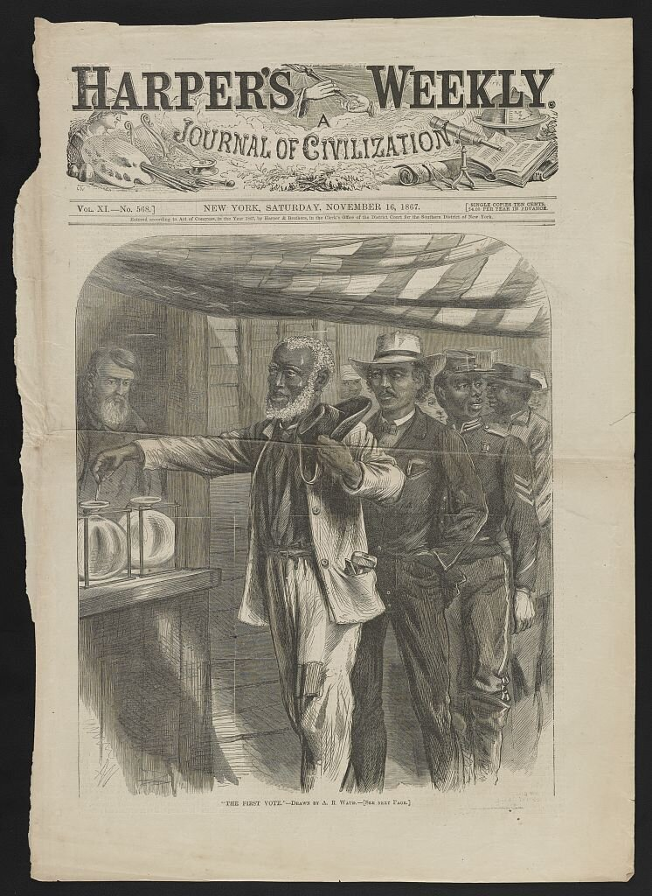
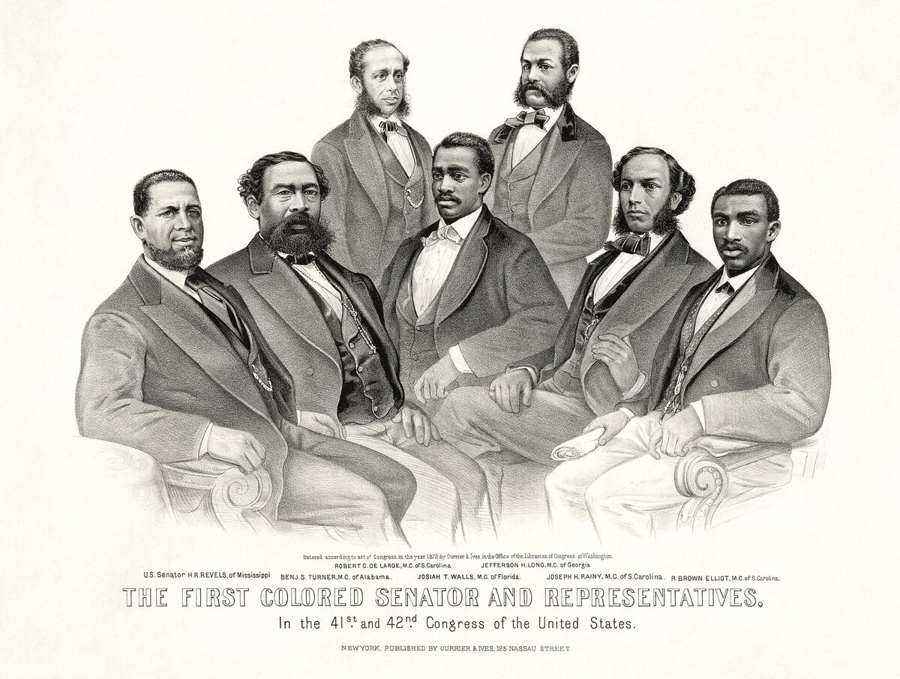

B2 · American History
Reconstruction
Within five years of the war, Black Americans were voting, holding office and building schools. Within fifteen, almost all of it had been taken back.
Play the audio and follow along, then read it again on your own. Tap or hover over a highlighted word to see what it means.
The war ended in April 1865 and left a question nobody had answered: what, exactly, had four million people been freed into?
There was no land, no money and no plan. Freed families owned what they could carry. The former Confederate states still had their courts, their newspapers and most of their landowners, and they began almost immediately to pass laws — the Black Codes — restricting where freedpeople could live, what work they could do, and whether they could leave an employer.
Congress responded with the most radical legislation in American history to that point. Three constitutional amendments were passed in five years: the Thirteenth abolished slavery, the Fourteenth made everyone born in the United States a citizen with equal protection of the laws, and the Fifteenth prohibited denying the vote on grounds of race.
The Fourteenth Amendment is the one that still runs through American law today. Almost every major civil rights case of the twentieth century was argued on it.
What followed in the south between 1867 and the mid-1870s was remarkable by any standard. Around two thousand Black men held public office, including sixteen in Congress and two United States senators from Mississippi. Black voters turned out in enormous numbers. Freed communities built churches and, above all, schools: the demand for education was so intense that families who had nothing paid teachers in food.


Reconstruction governments also did ordinary, unglamorous work — they established the first public school systems in most southern states, for white and Black children alike, and rebuilt roads and bridges.
The resistance was violent from the beginning. The Ku Klux Klan, founded in 1866, and groups like it attacked voters, officeholders, teachers and churches. This was not random violence; it was systematic and political, aimed at the specific people who were making the new arrangement work. Federal troops and prosecutions suppressed the Klan in the early 1870s, and new organisations replaced it.
Northern commitment did not last. The economic crisis of 1873 turned attention to other things. Newspapers that had supported Reconstruction grew tired of it. The Supreme Court narrowed the new amendments in a series of decisions, deciding that the Fourteenth protected rather less than its words suggested.
The end came as a bargain. The presidential election of 1876 was disputed, and the settlement that resolved it involved the withdrawal of the last federal troops from the south. By 1877 the remaining Reconstruction governments collapsed.
What replaced them took about twenty years to complete and was thorough. Poll taxes, literacy tests administered by white registrars, grandfather clauses and plain intimidation removed almost all Black voters from the rolls. In Louisiana, Black registered voters fell from about 130,000 in 1896 to roughly 1,300 in 1904.
Segregation was then written into law and upheld by the Supreme Court in 1896 as “separate but equal”, a formula that survived until 1954.
For most of the twentieth century, Reconstruction was taught as a failure caused by corruption and by giving the vote to people who were not ready for it. That interpretation has been dismantled by historians since the 1960s, and the modern view is almost the opposite: Reconstruction worked, within its limits, and was destroyed deliberately. The rights it established were not won again until the 1960s — which is why that period is sometimes called the Second Reconstruction.
Key Vocabulary
- freedpeople people who had been enslaved and were now free
- a code here: a set of laws on a particular subject
- an amendment a formal change or addition to a constitution
- a citizen a legal member of a country, with its rights and protections
- to prohibit to forbid officially
- to hold office to occupy an elected or official position
- ordinary normal, usual — careful: it is not an insult
- to suppress to stop something by force or authority
- a poll tax a payment required before a person is allowed to vote
- to support to back, to take the side of — careful: not to put up with or endure
Reconstruction — B2 · American History · Renan the Teacher, English Language Academy · https://renangrossi.github.io/englishclasses/reading/b2/reconstruction.html
Interactive Exercises
Practice
Complete each exercise, then click Submit to see your score and an explanation for every answer.
Speaking & Writing
Discussion
There are no right answers here — use these to practice speaking, or write a short answer to each.
- Freed communities paid teachers in food because they had no money. What does that tell you about how they understood education?
- Reconstruction was taught as a failure for most of a century. How does a wrong version of history survive that long?
- What would a country have to do, practically, to make rights on paper real for people who own nothing?